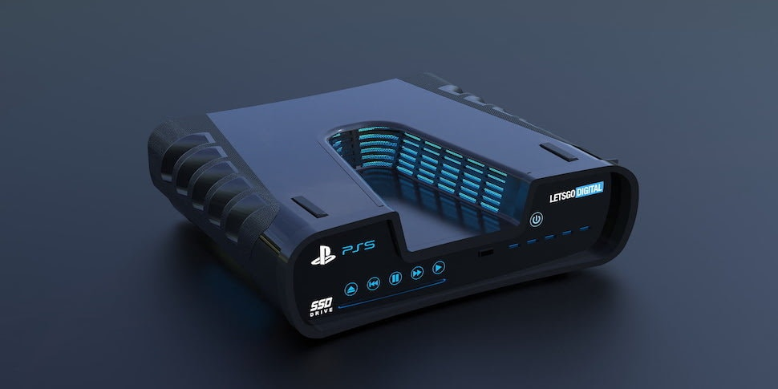
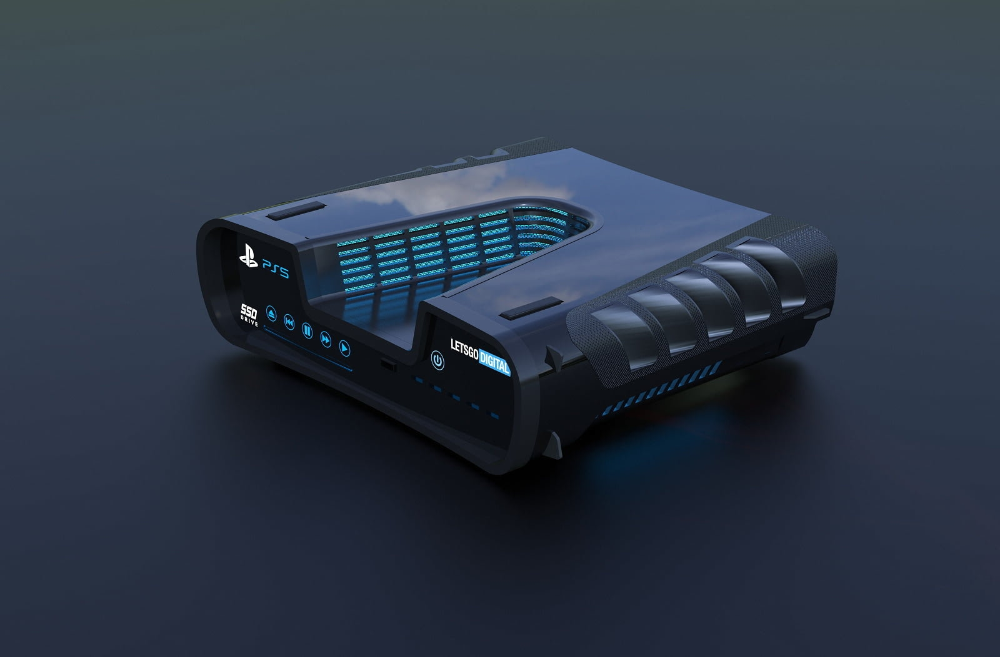
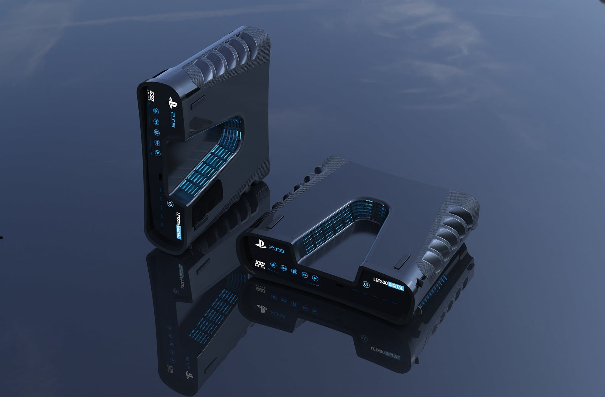

Так может выглядеть девкит PlayStation 5

Издание LetsGoDigital очень любит воплощать в реалистичных изображениях различные слухи и
чертежи. На этот раз в поле их зрения попала предположительная версия PlayStation 5 для разработчиков.
Так называемый девкит, который раздают создателям игр перед выходом нового поколения приставок.
Рендеры сделаны в высоком разрешении и воплощают дизайнерский взгляд на возможный внешний вид консоли.

А вот так выглядела утекшая в сеть картинка девкита. Этот дизайн позже подтвердил старший художник Codemasters. Он заявил, что у них в офисе есть несколько таких устройств.
